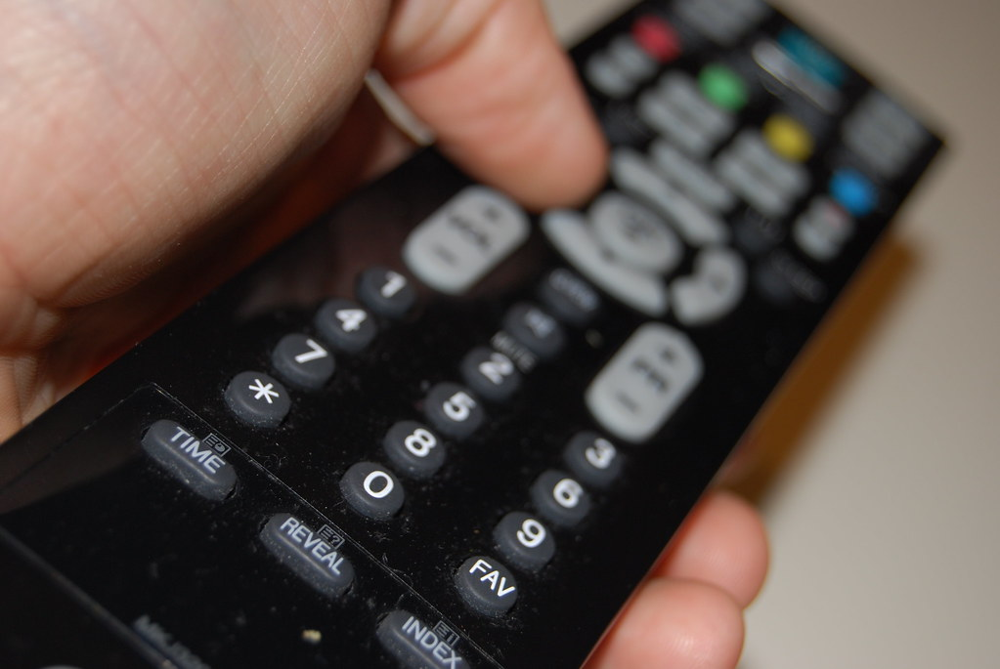

My favorite genre of TV is teen dramas. These shows are usually found on channels like The CW, Freedom (formally ABC Family), Netflix, and the former WB.
Here are a list of my favorite teen dramas:
One Tree Hill (2003-2012)
Gossip Girl (2007-2012)
The O.C (2003-2007)
The Society (2019)
Make It Or Break It (2009-2012)

Image: "Remote Control, Television - TV-controller" by espensorvik at Flickr, CC BY 2.0